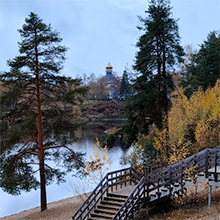

Что такое JavaScript?
JavaScript -- это объектно-ориентированный язык программирования, созданный в 1996 году Бренданом Эйхом для компании Netscape для веб-разработки. На данный момент разработчики на JavaScript являются самыми востребовынными в мире
Для чего он нужен?
JavaScript отвечает за интерактивность сайтов, такую как: оставление реакций под записями в соцсетях, создание слайдеров, различные всплывающие окна, динамически обновляемые элементы страницы и т.д.
Где используется?
JavaScript на сегодня используется почти во всех веб-сайтах. Наглядным примером может быть YouTube, который буквально напичкан JS'ом: иконка меню в левом верхнем углу, предпросмотр видео, разворачиваемое описание под видео и многие другие элементы пользовательского интерфейса!
Мои фотографии
Фото с Байкала
Made by Lopatin

Фото с Ленобласти
Made by Lopatin

Нравятся фотографии? Мне очень.
Обо мне
Меня зовут Саша Лопатин, я родился в Чите. Мне нравится программировать, отжиматься, качать пресс и играть на гитаре. Также я веду свои соцсети, в основном это ВКонтакте, где я быстро отвечаю.
ВКОНТАКТЕ– Василий Иванович, белые идут!
Тут Василий Иванович подорвался, ну, и бежать. Петька говорит:
– Василий Иванович, не хорошо получается, выходит, отступаем?
Василий Иванович:
– Дурак ты, Петька, земля круглая – с тыла заходим!
- У вас естя цветные телевизоры?
Продавец ему отвечает:
- Есть.
- Дайте мене тогда зеленый